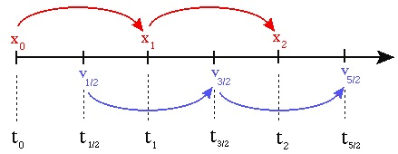

Code Implementation
Octree
There are two main algorithms required to calculate the force calculation using an octree: building the tree and traversing the tree to calculate the force on a single body. The pseudocode for these two algorithms is presented below.
function insertParticle(particle, node)
if(particle.position is not in node.box): # if particle is not in node's bounding box
return # end function
if(node has no particles):
node.particle = particle # particle is now assigned to node
if(node is an internal node):
updateCenterOfMass(node) # update center of mass of node
updateTotalMass(node) # update total mass of node
for child in node.children:
insertParticle(particle, child) # insert particle into the appropriate child node
if(node is an external node): # if node already has another particle associated with it
createChildren(node) # subdivide this node into its 8 children
for child in node.children:
insertParticle(node.particle, child) # insert the existing node.particle into the appropriate child node
for child in node.children:
insertParticle(particle, child) # insert particle into the appropriate child node
The insertParticle algorithm must be run for every particle in the simulation. The algorithm starts by checking to see if the particle is inside the given node's bounding box. Assuming it is, if the node has no particles, the particle currently being considered will be assigned to the given node. If the node is an internal node (that is, it has child nodes) but has no particles associated with it, we insert the particle into the appropriate child node and update the center of mass and the total mass of the node. If the node is an external node (i.e. it has no children) but already has a particle associated with it, we must first create children for that node and then recursively assign both the particle that was already assigned to the external node and the new particle that we were originally assinging. Once we loop over all particles, each leaf node will have only one particle associated with it.
function calculateAcceleration(particle, node, thetaTolerance)
if(node.leaf):
directAccelCalculation(node.particle, particle) # directly sum this node's particle's force on the particle we're considering
theta = node.size/distance(node.com, particle.position)
if(theta is less than thetaTolerance):
farFieldForceCalculation(node.mass, node.com, particle) # far field approximation is valid
else: # far field approximation is not valid
for child in node.chilren:
calculateAcceleration(particle, child, thetaTolerance)
calculateAcceleration takes in the particle we want to calculate the force for, the node we are currently comparing against, and thetaTolerance (the opening angle). The algorithm first starts by checking whether the node we are currently comparing against is a leaf node. If it is, it holds only one particle and we must directly calculate the gravitational influence of this particle on the the particle we passed in as an argument. If the current node is not a leaf, we calculate the opening angle theta (given by the size of the node divided by the distance from the node to the particle). If the opening angle is less than some pre-defined thetaTolerance (most codes in literature use 0.5), the far field approximation is valid and we can group all the particles belonging to this node and compute the gravitational influence of this group on the particle we want to calculate the acceleration for. If the far field approximation is not valid, we must open up the node and call calculateAcceleration for all children of the original node.
Through experimentation, we found that there was a significant amount of overhead associated with the original Python version of calculateAcceleration. Therefore, we optimized the force calculation using Cython. The speed-ups with the Cython version are shown in the Analysis section.
Leapfrog Algorithm
Once the forces are calculated, we use the Leapfrog Algorithm to update the positions and velocities. The Leapfrog
integration algorithm is a symplectic (i.e. time-reversible) method for solving the set of differential equations
given by Newton's laws:
\(v = \frac{dx}{dt}\)
\(F = m \frac{d^2x}{dt^2}\)
Because it is sympletctic, the Leapfrog Algorithm is guaranteed to conserve energy (to reasonable precision,
determined by the time step chosen). Even though it is a first-order integrator, it performs better than
higher-order algorithms (like 4th order Runge-Kutta) at conserving energy over many time steps.
The algorithm is nearly identical to the Euler method, except the velocities and positions are computed at
half-timestep offsets:

Therefore, there is an initial self-start phase of a half-step:
\(a_0 = F(x_0) / m \)
\(v_{\frac{1}{2}} = v_0 + a_0 \frac{dt}{2} \)
\(x_1 = x_0 + v_{\frac{1}{2}} dt\)
followed by the regular Euler updating kick-drift steps:
\(a_1 = F(x_1) / m \)
\(v_{\frac{3}{2}} = v_{\frac{1}{2}} + a_1 dt\)
\(x_2 = x_1 + v_{\frac{3}{2}} dt\)
Parallel Algorithm
Each step of the N-body integration algorithm has the following structure:
- Build the Octree
- For each particle: compute the total force by traversing the Octree
- Update the velocites and positions using LeapFrog algorithm
Infrastructure
We will test our code by simulating an elliptical galaxy, modeled by the Plummer density profile.